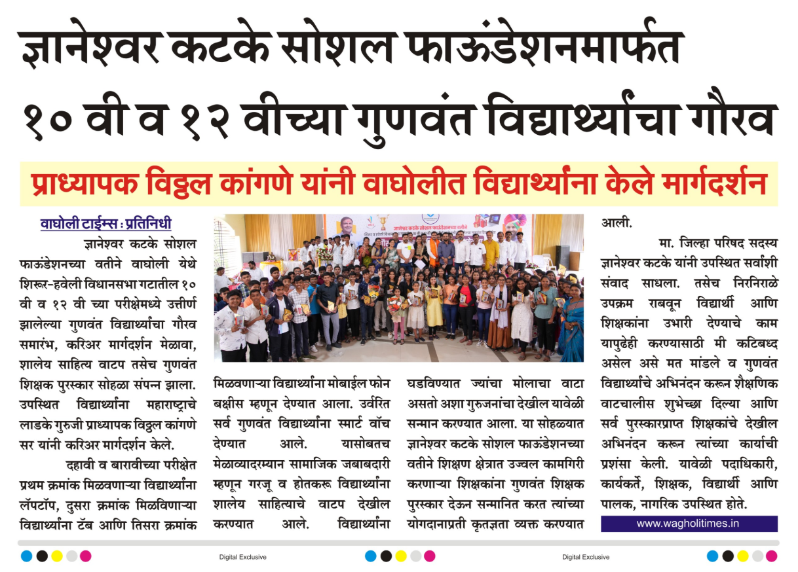
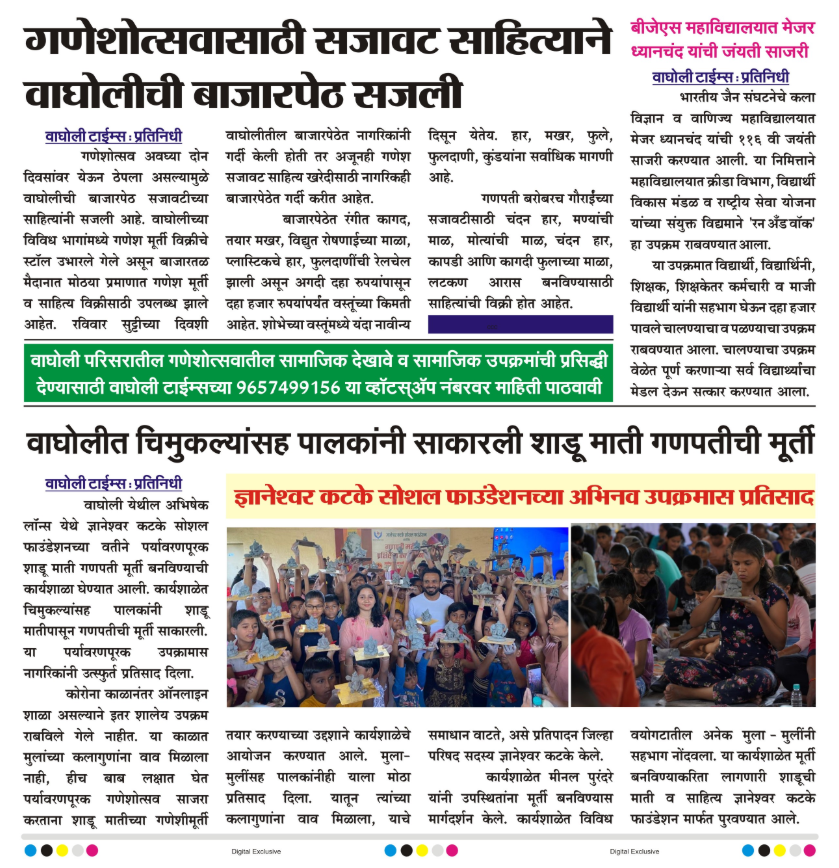
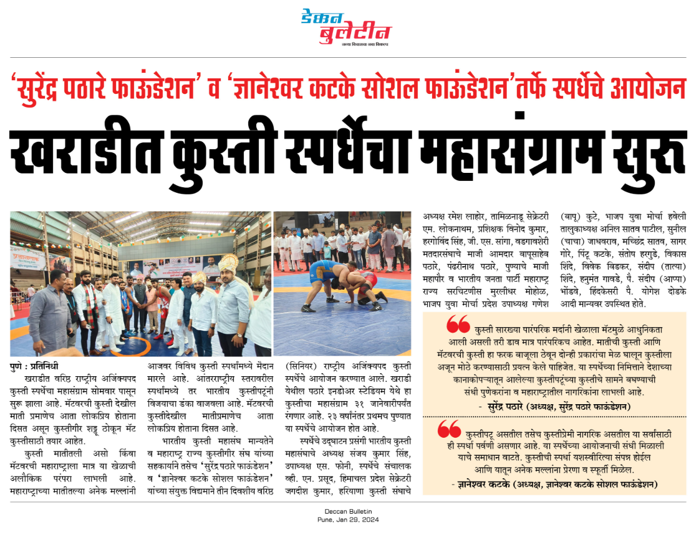
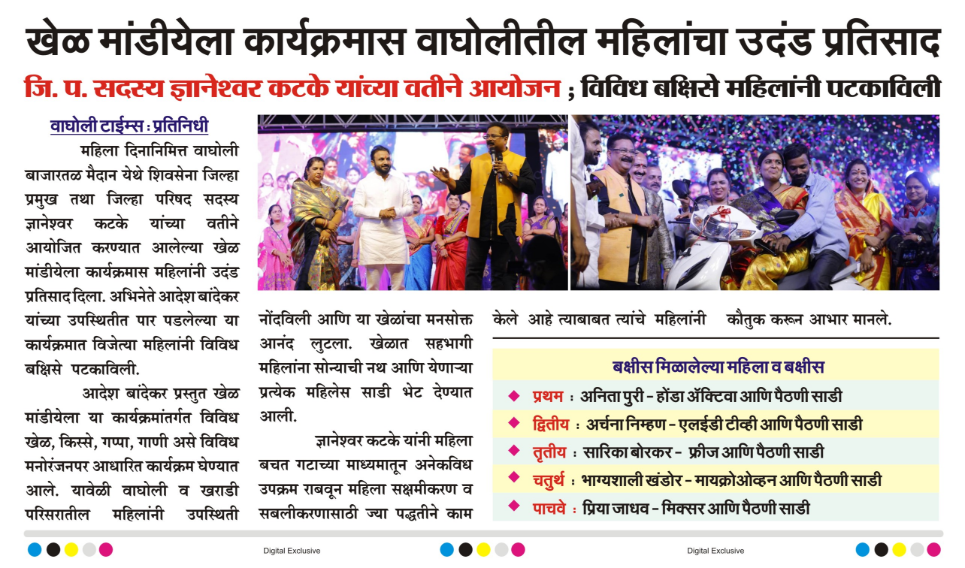
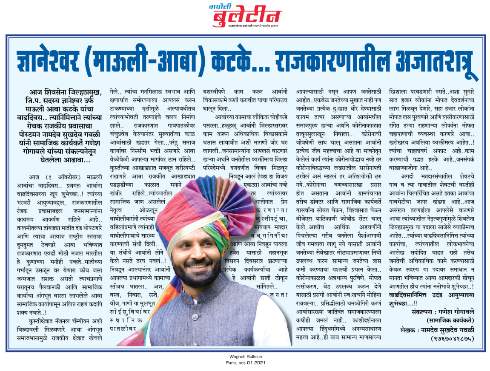
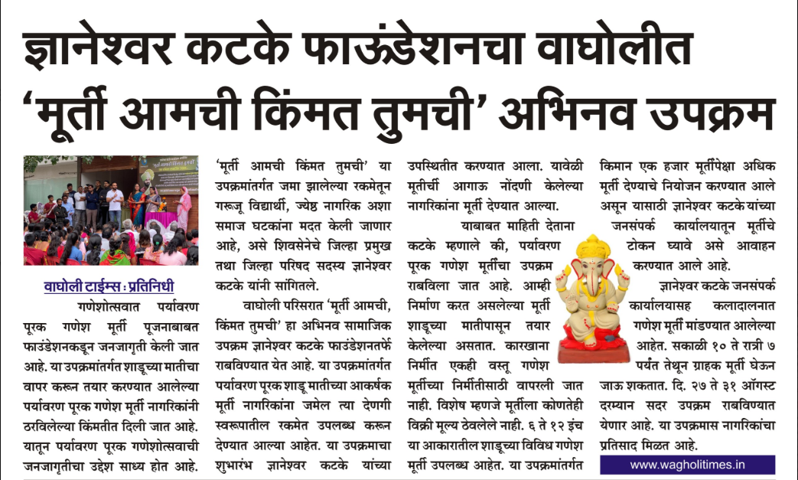
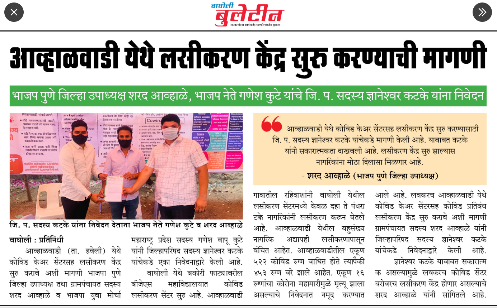

सांस्कृतिक४ ऑक्टोबर २०२२
नवरात्रोत्सव २०२२ – रास दांडिया
वाघोली येथे तीन दिवसीय रास दांडिया उत्सव. परिसरातील नागरिक व महिलांनी मोठ्या संख्येने सहभाग घेतला आणि उत्कृष्ट वेशभूषा व नृत्यासाठी बक्षिसे देण्यात आली.
फाउंडेशनचे अलीकडील कार्य.

वाघोली येथे तीन दिवसीय रास दांडिया उत्सव. परिसरातील नागरिक व महिलांनी मोठ्या संख्येने सहभाग घेतला आणि उत्कृष्ट वेशभूषा व नृत्यासाठी बक्षिसे देण्यात आली.

शाडू मातीची गणपती मूर्ती बनविण्याची मोफत कार्यशाळा. [अधिक तपशील जोडा]

पावसाळ्यात विद्यार्थ्यांसाठी रेनकोट व छत्र्यांचे वाटप. [अधिक तपशील जोडा]

गुणवंत विद्यार्थ्यांचा सत्कार. [अधिक तपशील जोडा]

रमजान ईदनिमित्त बांधवांना इफ्तारीची भेट. [अधिक तपशील जोडा]

कुटुंबांसाठी तंदुरुस्तीचा उपक्रम. [अधिक तपशील जोडा]

स्थानिक बास्केटबॉल लीग. [अधिक तपशील जोडा]